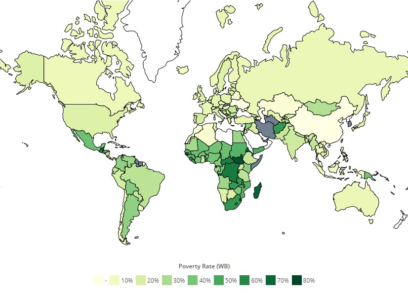

Comparison of Poverty in other Countries
top 8 countries with highest and lowest poverty
- Madagascar - 70.70%
- Guinea-Bissau - 69.30%
- Eritrea - 69.00%
- Sao Tome and Principe - 66.70%
- Burundi - 64.90%
- Democratic Republic of the Congo - 63.90%
- Central African Republic - 62.00%
- Guatemala - 59.30%
